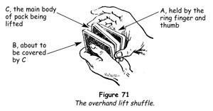
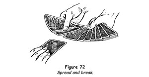
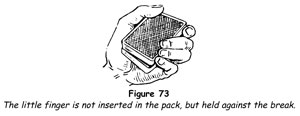
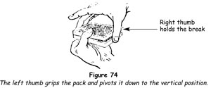
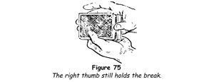
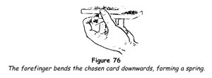
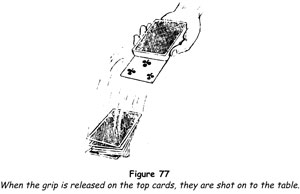

Injog and Break
The drawback to the undercut and throw, after jogging a card in the overhand shuffle, is that frequent repetition would reveal to a keen observer the fact that only half of the deck is being shuffled. To overcome this difficulty, recourse is had to the formation of a division between the jogged card and the cards below it, which are to be kept intact and returned to the top of the pack. This division is termed a break.
1. Undercut half the cards, injog the first card and shuffle off in a manner already explained.
2. Preparing for a second overhand shuffle, pat the upper side of the deck square with the flat right fingers, then place the right thumb against the end of the jogged card and the right middle finger against the outer end. Press the thumb upwards and inwards, bending the protruding end of the jogged card upwards as it enters the pack, thus making a division or break between it and the cards below it.
3. Grip the whole pack firmly between the right thumb and middle finger, lift it and begin another overhand shuffle in the usual fashion. Shuffle freely until the break held by the thumb is reached, then throw the whole of the packet below it on the top in one block.
Thus the same result follows as that obtained by the undercut; apparently the deck has been freely shuffled twice.
We have found that most beginners cannot learn this sleight from a printed explanation, whereas a demonstration enables them to do it in a few minutes. The difficulty seems to be in understanding the action of the thumb on the jogged card, with the result that it is pushed flush with the other cards and so lost. To avoid this fatal error, let the tip of your thumb touch the end of the jogged card and rest it there for a fraction of a second. Then, as you press your middle finger against the outer end of the deck, push the end of the jogged card upwards and inwards, and the break will be formed automatically under the thumb as it presses firmly against its end of the pack.
Overhand Break Control
This method of controlling a card returned to the pack is the same as the overhand shuffle control already given, save that in this case the injog and break is used in place of the undercut.
1. After a card has been selected, begin an overhand shuffle and, when about half the cards are in the left hand, extend that hand and have the chosen card placed on top of those you hold.
2. Run three cards flush on top of the chosen card, injog the next card and shuffle off.
3. Perform the action described in step 2 of the injog and break; that is, form a break under the jogged card with the right thumb, by bending the protruding end of the card upwards as the right hand takes the pack.
4. Shuffle off the cards above the break and drop the cards below it on top. The chosen card is four from the top.
5. If your trick requires the placement of the chosen card at the top, you can shuffle the four top cards to the bottom, injog, shuffle down to it and throw the four bottom cards on top - in other words, repeat the overhand break control shuffle.
Overhand Lift Shuffle
To a certain extent the same objection that we have noted with regard to the undercut and throw method applies to the use of the break. If used constantly without any variation it would be possible to detect the fact that a portion of the deck is kept intact. The lift shuffle obtains the same result as both the preceding methods
in one shuffle and is therefore the most perfect partial false shuffle extant.
1. Let us suppose that a small number of cards, up to say eight or ten, must be retained intact on top of the pack in the course of an overhand shuffle.
Begin by lifting the whole pack with the right hand, holding it by the ends between the top phalanxes of the thumb and the middle finger.
2. As the first movement of the shuffle, pull off these cards into the left hand. Bring the deck down on top of this packet (A) and pull off another packet (B) with the left thumb. At the same moment that the deck strikes the left palm, press the tip of the right ring finger against the end of the first packet (A), pressing its inner end against the right thumb at the second joint and thus holding it firmly.
3. After releasing the packet B, lift the right hand, carrying away the remainder of the deck and packet A gripped between the ring finger and the thumb. Packet B completely conceals this move (figure 71).

4. Continue the shuffle from C until all the cards between the middle finger and the thumb have been shuffled off, then drop packet A intact on top of all the cards in the left hand.
A few minutes' practice will enable you to make this lift of the special packet smoothly and imperceptibly. We know of no other sleight in the whole range of card conjuring which is so valuable and so easily learned. A judicious mixture of the shuffle and undercut (overhand shuffle control), the shuffle and break (overhand break control), and the shuffle and lift (overhand lift shuffle) will baffle the keenest and most sceptical observer.
Naturally the top card can be controlled in this way just as easily as can a small number, but this is only one of the several uses to which the sleight can be put.
A very effective use is for gathering several chosen cards and retaining them on top of the deck, although they are replaced separately and the pack is shuffled each time. To do this, start with the deck in the left hand. Undercut the bulk of the cards with the right hand, and thrust forwards the left for the replacement of the chosen card on top of that packet. Then execute the lift sleight in the first movement of the overhand shuffle, and finally drop the lifted packet on top of all. Repeat the moves for the remaining cards and you have all the chosen cards on the top of the pack. Remember, however, that the order they are now in is the reverse of that in which they were replaced.
Lift Shuffle Force
It is often necessary to compel a spectator to take a certain card. This is termed forcing and there are a number of ways in which it can be done, some of which will be discussed later. It must always be borne in mind that a force is only successful when the spectator is convinced that he has had a free choice. If he has any suspicion that he had been made to take a certain card, then the glamour of its later discovery is tarnished. The lift shuffle affords a method of forcing that is not only easy, but also convincing.
1. Have the card to be forced on the top of the deck; shuffle it to the bottom and back to the top.
2. Tell a spectator that you are about to shuffle the cards, and request him to call 'Stop' at any moment that he pleases. Execute step 2 of the overhand lift shuffle.
3. Continue to shuffle without pause, taking off cards with the left thumb in small packets. At the moment the spectator calls stop, bring the right hand down and release the lifted packet on top of the cards already in your left hand, as you say, 'Here? Very well, that's fine.'
4. Extend your left hand to him to take the top card of that packet, that is to say, the card to be forced.
The action is so natural that many of the best card magicians use this force in preference to any other. Of course, you must not look at the cards while shuffling. Keep your gaze fixed on the spectator, watch his lips and you will note the exact moment he is about to call stop and act accordingly.
By having several cards that are to be forced on the top of the deck, you can force them in rapid succession in the same way. When the first card has been taken, place the cards in your right hand under those in your left, and simply repeat the procedure with a second and third spectator.
Spread and Break
A modern and inartistic way of controlling a card after its replacement in the pack is to cut off half the cards with the right hand and thrust out the left hand for the spectator to place his card on the left-hand packet. The cut replaced, the tip of the left little finger is inserted secretly between the two packets, that is, above the chosen card. This method is bad, first, because the spectator is given no choice as to position in the placing of his card, and, second, because the bending of the little finger is generally noticeable.
Instead, spread the cards fanwise with both hands, in the same way as when offering the pack for selection of a card. Move your hands towards the spectator as you ask him to replace his card. At the moment he is about to do this, make an opening in the middle of the spread (figure 72), reach forwards and take his card as with forceps, by closing the cards on it and immediately drawing your hands back. The insertion of the left little finger between the packets will be completely covered by the action.

Holding a Break
When a break is made by the insertion of the tip of the little finger, a common error is to hold the break in the same way, that is, by keeping the little fingertip inserted between the two portions of the pack. The correct procedure is this.
When the break has been formed by the insertion of the little fingertip, square the deck with the right hand, the fingers at the outer end and the thumb at the inner end. Grip the pack momentarily with the right thumb and fingers, holding the break with the thumb, and withdraw the little finger. Immediately press it against the side of the deck (figure 73).

It will be found that the break can be held quite securely in this way, and the right-hand side of the deck can be shown freely as well as the outer end. The holding of the deck, therefore, appears to be perfectly regular. This is most important, since the break is of great use in card conjuring and to hold it correctly is essential to clean manipulation.
Spread and Break Control
When a chosen card has been returned to the pack and a break above it has been secured by the left little finger, it can be brought to the top of the deck easily and quickly.
1. Square the ends of the pack with the right hand, then grip it firmly between the right thumb at the inner end and the fingers at the outer end, the thumb holding the break (figure 74).

2. Change the grip of the left hand by seizing the left side of the deck at the middle, near the edge between the tip of the left thumb on the back and the tips of the fingers on the face.
3. Maintain the pressure of the right thumb and fingers on the ends of the pack, and with the left hand turn the left side of the deck downwards to the regular position for an overhand shuffle (figure 75).

4. The break will be retained by the pressure of the right thumb, and you go at once into an overhand shuffle. Shuffle freely until the break is reached, then throw the remainder of the deck on top, bringing the chosen card to the top of the pack.
TRICKS WITH THE OVERHAND SHUFFLE
The Sevens
The following trick makes use of the overhand shuffle to force a card and to bring a number of required cards to the top of the pack so that they can be used in the course of a so-called coincidence trick. Four cards are selected, apparently by purest chance, and the cards prove to be the four seven-spots, a remarkable violation of the laws of probability.
1. To prepare for the trick place the four sevens secretly on the top of the pack, then force the top card (the first seven) on a spectator by means of the lift shuffle force. Have the spectator place that card face downwards on the table, without looking at it, and place his hand on it. As he does this, place the packet in your right hand under those in your left, so that the remaining three sevens are on the top of the pack. Shuffle by running off two cards into the left hand, drop the pack on them and pick up the whole pack. One seven will now be on the top and two at the bottom.
At once continue the shuffle as in step 2, retaining the top and bottom cards in position, thus keeping the sevens in the same position, two at the bottom and one at the top.
2. Spread the entire deck face downwards on the table in a neat row and request the spectator to touch any card. Remove the card and turn it face upwards. Whatever its value, gather up the remainder of the deck and deal beside it, face downwards and in an orderly pile, cards to correspond in number. For example, if the card is an eight-spot, deal eight cards. If the card is a picture card, announce that you will count all such cards as tens and treat them as such. Thus, you have a seven-spot at the bottom of this pile.
3. Repeat the same overhand shuffle, retaining one of the other two sevens on the bottom and bringing the other one to the top of the pack. The position now is that you have a seven on the top and the fourth seven on the bottom.
4. Spread the cards on the table again and request another spectator to touch a card. Remove it, turn it face upwards, gather up the remaining cards and deal beside it, as before, the number of cards to correspond with its value.
5. Shuffle the cards once more, this time simply bringing the bottom card (the fourth seven) to the top. 'You will notice' you say, 'that your choice of cards is entirely fair. Neither you nor I can know the value of the cards you will select.'
6. Have a third spectator touch still another card after you have spread the deck on the table, and proceed in exactly the same way as before. There will then be three piles of cards on the table, and at the bottom of each of them, unknown to the spectators, there is a seven-spot.
7. Now turn to the spectator whose hand still rests on the seven-spot that you forced on him at the start of the feat. 'Will you, turn up your card and show it to all of us?'
He does so and it is seen to be a seven-spot.
'The vagaries of chance are inexplicable,' you observe thoughtfully, 'for here we have four cards selected by four different people in the fairest possible way. The probability of each selecting a card of the same value is so remote as to be practically impossible. And yet [slowly turn each of the packets face upwards and show, at their faces, the three remaining sevens!] that is exactly what has happened.'
The student will be gratified, upon performing this feat, to notice the astonishment that it arouses. This is caused largely because the spectators were not told beforehand just what you proposed to do and for this reason did not scrutinise your preliminary actions so closely as they might have had they known your objective.
This is one of the psychological advantages all good card conjurors keeps to themselves. The audience does know what is about to happen. If they did, their vigilance would be aroused and they would study what the conjuror does to determine how it is done. Since they do not know the purpose, however, they are not alerted and later, when they attempt to reconstruct what has been done, their memory fails them.
This should also make clear why the expert card conjuror rarely if ever repeats a trick for an audience, no matter how great their importunity.
To reiterate two of the key rules of conjuring:
1. Never tell your audience the effect of a feat until all the preliminary actions which make it possible have been completed.
2. Do not repeat a trick unless you can produce the same effect by a different method.
Obliging Aces
'I wouldn't want to play cards with you!' is a statement inevitably addressed to a good conjuror at some time or other. A good trick to use after someone has made this remark is the following easy feat, which has all the appearance of great skill.
Before you start, secretly place any nine-spot at the ninth position from the top, with the four aces immediately following it. To do this while openly toying with the cards and carrying on your part in the general conversation, spread the cards with the faces towards you. Spot an ace and cut the pack to bring it to the top. Then run through the cards and slip each of the other three aces to the top in turn.
Next find any nine-spot and slip that to the top. Turn the deck face downwards and shuffle overhand thus. Undercut about two-thirds of the deck, run four cards, injog the next card and shuffle off. Undercut to the jog and throw on top. Repeat the same shuffle, and you will have placed eight cards on top of the nine-spot and the aces will lie in the tenth, eleventh, twelfth and thirteenth positions as required for the trick.
Now we are ready for the feat itself.
1. Presuming that the conversation has been about gamblers and poker playing, offer to give a little demonstration, under very strict conditions, by having the spectators themselves name the numbers at which certain cards are to be found. Shuffle overhand, using the overhand break control to return the arranged cards to the top of the pack.
2. Invite a spectator to call any number between ten and twenty. Suppose fourteen is called. Deal fourteen cards face downwards in a pile and lay the remainder of the pack aside. Pick up the fourteen cards. 'You named the number fourteen,' you say. 'One and four make five so I shall take the fifth card.' Deal four cards face downwards, then take the fifth card and lay it aside face downwards.
Drop all the cards remaining in your hands on those just dealt, pick up all and replace them on the remainder of the deck.
3. Overhand shuffle again, using the injog and break, and again bring the arranged cards into the required position. Ask a second spectator to name another number between ten and twenty. Proceed in exactly the same way as in step 2, using the new number. Place the card thus arrived at with the first, also face downwards.
4. Have a third spectator name a number and so arrive at a third card. Place it with the other two.
5. 'I want one more card,' you say. 'This time I'll leave the choice of a number to pure chance.' Shuffle overhand again, using the overhand lift shuffle this time but being careful to have more than nine cards in the first packet. This shuffle will return the nine-spot to the top of the pack and the ninth card under it will be the fourth ace. Turn the top card, the nine, then deal and place the ninth card with the other three cards you have found and laid aside.
'In spite of the fact that you named any numbers you pleased and that the last card was determined by chance alone, look what has happened!' Turn the four cards face upwards with a flourish. They are the four aces!
Leapfrog
Here we have a rather striking discovery. A selected card leaps into view over the backs of the others.
1. Following the usual routine a card is freely selected, noted, returned to the pack and controlled to the top.
2. Shuffle the card to the bottom and retain it in that position.
3. Key undercut about one-third of the deck and place the packet on top so that about one-third of its length protrudes outwards, being careful not to expose the bottom card in making the cut.
4. With the tip of the left forefinger pull down the outer end of the selected card at the bottom of the upper packet until it is bent almost at right angles (figure 76). 'If there is one game the cards love, it's leapfrog. Watch!'

5. Have the chosen card named, and instantly let all the cards of the upper packet escape from your left thumb and fingers, and press the forefinger hard against the end of the bent card. All the cards of this packet will fall upwards and outwards, turning face upwards as they fall on the table, except the bottom card, the chosen card, which will also turn face upwards but will be retained against the bottom card of the deck by the left forefinger, figure 77.

6. Raise your left hand and display the card thus extending face outwards from the top of the pack, which faces you.
Spectator's Card Trick
Sooner or later you will meet the man who insists on taking the pack in his own hands and then challenges you to do a trick. The following feat is useful on such occasions.
1. Secretly glimpse the top card of the pack, which we will say is the four of hearts. False shuffle the cards, retaining the four of hearts at the top.
2. Hand the pack to a spectator, saying, 'It is curious that so many people suspect a magician of conniving and subterfuge. I assure you that the things I do simply happen - I have no control over the cards. To show you what I mean, let's pretend that you are the magician and I am the spectator. First of all, you must spread the cards and invite me to remove one.'
3. Remove a card and glance at it guardedly. You do not care what card it is since it plays no part in the trick, but a good satirical impersonation of a canny spectator can be amusing. 'Now,' you say, 'tell me to replace my card.' When he does so, cautiously insert the card about halfway down in the pack and push it flush. Have him square the cards, then continue. 'You see how simple it is? Now all you have to do is find my card and produce it in some surprising manner.'
4. Your assistant will be forced to admit that he cannot do this. 'Then you must appeal to others,' you say. 'Ask this gentleman. Have him name some number, say between ten and twenty, and no doubt my card will be at this number.'
5. Someone names a number, say fourteen. Have your assistant deal fourteen cards face downwards, reversing their order. 'My card was the four of hearts,' you say, naming the card you glimpsed in step 1. 'Look at the next card.' He looks at the card at the top of the rest of the pack, but it is not your four of hearts. Have him turn it face downwards and replace the dealt cards on the pack.
6. 'Horrible experience, wasn't it?' you say sympathetically. 'It has happened to me, too. But when something goes wrong, always blame it on the spectator. Tell him he wasn't concentrating. Then ask someone else to name a number, say a number between twenty and thirty.'
7. Have a second spectator name such a number. Let us say it is twenty-five. Have your assistant deal twenty-five cards face downwards, thus reversing their order, and look at the next card on the pack. It still is not your four of hearts. Have it turned face downwards and the dealt packet replaced.
8. 'Well,' you say, 'you've not done very well, have you? I'm afraid I'll have to take over.' Take the pack from him and give it a little shake. 'I think that will do it,' you comment. 'Now, I believe in the happy medium. The first number was fourteen and the second was twenty-five, and the difference between the two is eleven. To find my card I will deal eleven cards, like this [here you deal off eleven cards], and the next card is my card, the four of hearts!' Turn this card face upwards and show that it actually is the four of hearts.
The trick is entirely automatic if the above procedure is followed. It is only necessary to have the first spectator name a number between ten and twenty, and the second to name a number between twenty and thirty.
A Poker Puzzle
Can you deal a good poker hand?' is a question that is almost certain to be asked after you have shown your prowess with cards. The routine that follows has been arranged to convince the questioner that you can.
1. 'Can I deal a good poker hand?' you repeat. The answer to that is - yes and no. I'd better show you what I mean. No doubt you've read articles on the methods used by the gamblers - everyone has heard of second dealing and bottom dealing, although very few people have seen these sleights performed. In poker, the gambler arranges to get the high cards of course. Let me show you the usual method. I'll use the four kings.' As you are talking in this vein, run through the cards with the faces towards yourself and, as you come to each king or ace, slip the kings to the bottom and the aces to the top of the pack. Do this casually without explaining what you are doing.
2. Take off the four kings and show them. 'Four kings make a good hand,' you say, 'so the gambler places the cards he wants on the bottom of the pack.' Place the four kings on the bottom.
3. 'We shall suppose it is a five-handed game. The gambler deals four cards, but when he deals one to himself he pulls off the bottom card, so.' Do this openly, laying the king face downwards before you.
4. Continue the deal in the same way, each time pulling out a king for yourself as you explain that by years of tedious practice the gambler can make this false deal imperceptibly. When you have dealt yourself the four kings from the bottom, deal the next five cards in the ordinary way. You have dealt five hands of five cards each and you show that you have four kings.
5. 'That is the gambler's method,' you say. Gather up the other four hands carelessly in any order, but without disturbing their sequence, and drop them on top of the pack. Do not expose the face cards, which are the four aces. Drop your own hand with the four kings on the pack last of all. The deck is now stacked to give you the four aces on a deal of five hands.
6. False shuffle the pack by undercutting not more than twenty cards, injogging the first card and shuffling off. Form a break at the injog, shuffle to the break and throw the cards below it on top, thus returning the top thirty cards to their original position.
'That is the way a gambler does it,' you explain. 'However, you asked me if I could deal a good poker hand, and I must remind you that I am not a gambler and therefore never use the gamblers' methods. If I did try to deal myself a good hand I'd use magic, like this. Watch my hands and see if you can find any fault with the way I deal.'
7. Deal five hands of five cards each in the regular way. 'Did you notice anything unusual with the deal?' you enquire. 'Of course not. Yet I dealt myself the four kings. Look!' Pick up your hand and, holding it well squared, turn it face upwards, showing a king at its face. 'The four kings!' Remove the top card, exposing an ace. 'Ah, something's gone wrong!' you exclaim disgustedly. Pause for a second, then brighten, saying, 'Oh, well! I imagine that four aces are good enough!'
Spread the other four cards you hold showing that they are the aces.